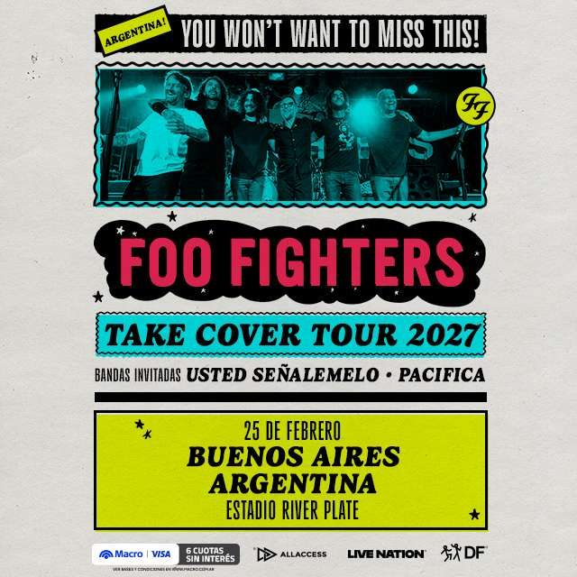
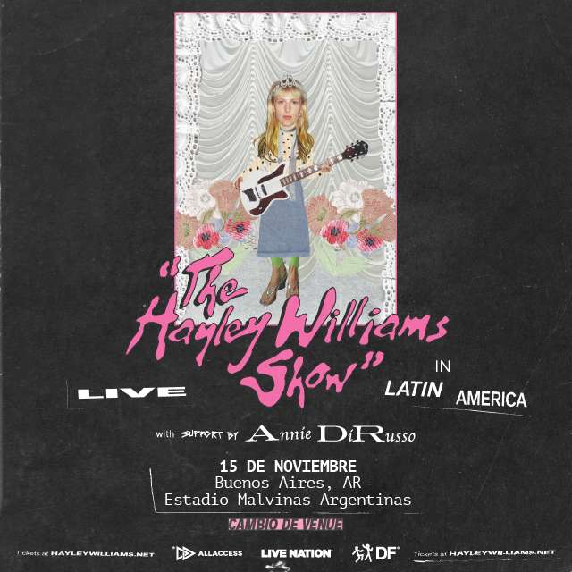

Lollapaloza 2027
Fecha: 12,13,14 de Marzo
Lugar: Hipodromo de San isidro
ConcertWeek
¡Los shows que van a hacer historia en Argentina! No te quedes afuera de las tres grandes citas musicales de la temporada: el regreso de Foo Fighters, la locura pop de BTS y los tres días imperdibles de festival en Lollapalooza 2027. Buscá tus boletos ahora.
¡Los shows que van a hacer historia en Argentina! No te quedes afuera de las tres grandes citas musicales de la temporada: el regreso de Foo Fighters, la locura pop de BTS y los tres días imperdibles de festival en Lollapalooza 2027. Buscá tus boletos ahora.
Fecha: 12,13,14 de Marzo
Lugar: Hipodromo de San isidro

Fecha: 25 de Febrero 2027 - 21:00 HS
Lugar: Estadio River Plate

Fecha:21, 23 y 24 de Octubre-21:00 HS
Lugar: Estadio Unico de la Plata

Fecha: 4, 5, 6, 7, 11, 12 y 13 de septiembre de
Lugar:Parque Olímpico, Barra da Tijuca, Río de Janeiro

Fecha: Domingo 15 de noviembre 20:30 hs.
Lugar: Estadio Malvinas Argentinas
Fecha:21, 23 y 24 de Octubre-21:00 HS
Lugar: Estadio Unico de la Plata